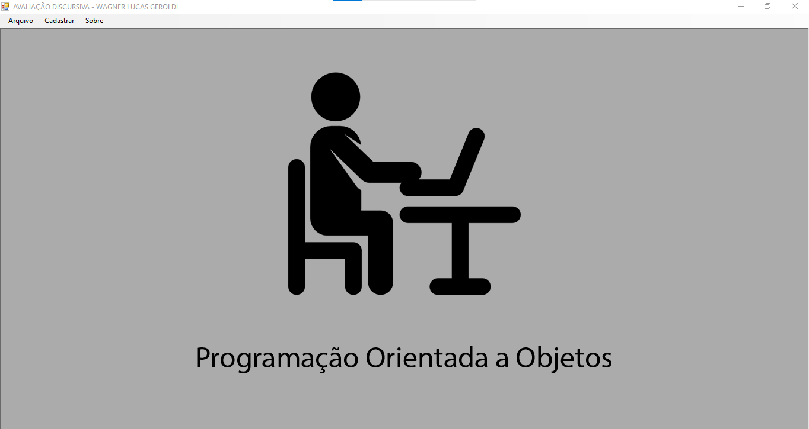
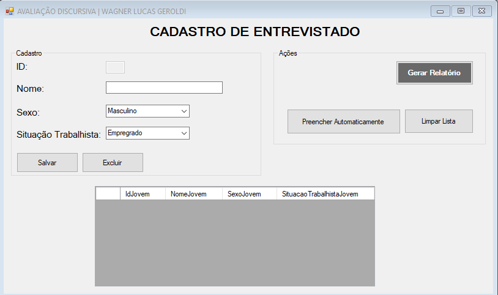
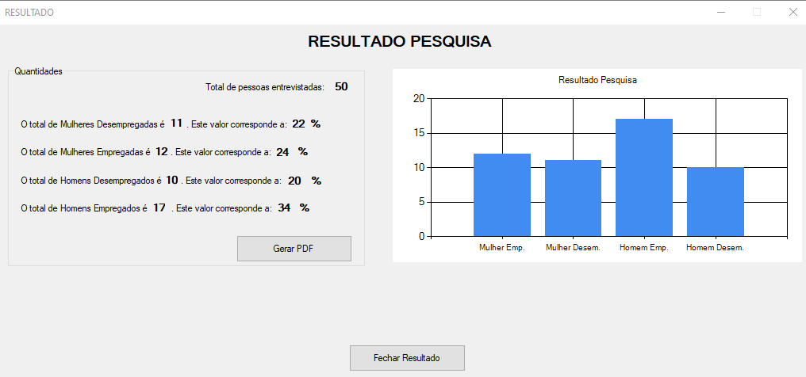

Este sistema foi desenvolvido como prova do conteúdo Orientação a
Objetos na Faculdade de Análise e Desenvolvimento de Sistemas.
O enunciado solicitava a criação de um sistema que fosse capaz de
cadastrar pessoas do sexo masculino ou feminino, informando
posteriormente uma porcentagem de quantos destes trabalhavam ou não.
A versão da prova era existir apenas a "lógica" implementada em console,
porém resolvi desenvolver uma versão completa. Incluindo até mesmo um
gráfico e a geração de PDF.
Desenvolvido com Windows Forms, e utilizado a biblioteca "ITextSharp" para auxiliar na criação do PDF.
A tela de cadastro possui 80% da lógica do programa. No grupo cadastro é possível cadastrar individualmente as pessoas, o botão salvar possui mecanismo que não permite salvar caso o usuário esteja com algum dado vazio. O botão excluir não permite excluir caso não tenha algum usuário selecionado na listagem. No grupo ações, existe um botão para gerar o relatório, o mesmo possui um mecanismo que emite um alerta, nao permitindo a criação do relatório caso a lista esteja vazia. O botão preecher automaticamente foi criado para gerar uma lista de 50 pessoas para fins de testes e para que o professor não precise digitar manualmente ao avaliar o programa. Este botão possui mecanismos para alertar o usuário caso a lista já contenha itens e pede permissões de limpeza da lista antes de gerar automaticamente. Caso a lista esteja vazia ele verifica isso antes e não emite alertas. O botão limpar lista simplesmente limpa a lista após a permissão do usuário.


